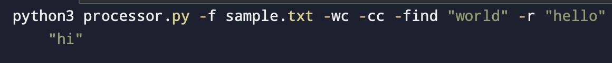

Process Text File¶
This section provides detailed information on how the File Processor handles text files.
Reading the File¶
The processor reads the entire content of the specified file into memory. For very large files, this might not be the most efficient approach, but it works well for most use cases.
Word Count¶
Words are counted by splitting the text on whitespace. This means that hyphenated words are counted as a single word, and punctuation attached to words (like “example,” with a comma) is considered part of the word.
Character Count¶
All characters in the file are counted, including whitespace and newline characters.
Finding Words¶
When searching for a word, the processor converts both the search term and the text to lowercase, ensuring a case-insensitive search. Partial word matches are not counted.
Replacing Words¶
Word replacement is also case-insensitive. The new word retains the case of the old word (upper, lower, or title case).
Output¶
Results are printed to the console. In the case of word replacement, a new file is created with the modified text.
{kind=link}
This image shows an example of processing a text file with various operations.